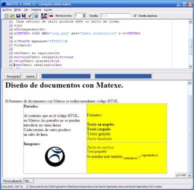
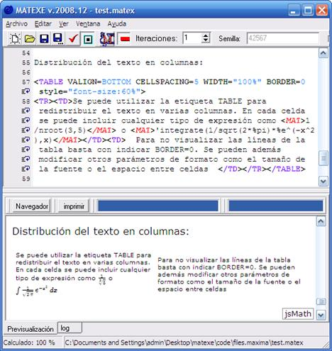

El diseño de documentos está basado prácticamente en HTML.

Una de las pocas diferencias a tener en cuenta es que los retornos de carro en un documento .matex se traducen en un <BR> avance de línea en el documento final (exceptuando las líneas que sólo contienen etiquetas HIDE).
Para facilitar la comodidad del diseño de documentos, se añade además, la posibilidad de utilizar otras etiquetas al código HTML:
<BP>
Añade una nueva página. Esta etiqueta no es visible desde el programa, pero permite separar el documento en diferentes páginas a la hora de imprimir.
<TAB>
Añade un tabulador.
Todas estas etiquetas serán traducidas a HTML estándar en el documento final.

Para más información acerca de HTML se puede consultar la sección Referencia rápida HTML
Created with the Personal Edition of HelpNDoc: Free Kindle producer